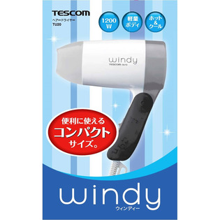
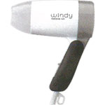

返回列表
产品名称：テスコム コンパクトヘアードライヤー グレー

テスコム テスコム コンパクトヘアードライヤー グレー ＴＵ２０（Ｇ）
メーカー テスコム
JANコード 4975302132017
商品の特徴
収納や携帯に便利な折りたたみ式のコンパクトヘアードライヤーです。
成分・分量
本体：PP / グリップ：PP
用法及び用量
電源プラグをコンセントに差し込む。 使用後は、切替スイッチを「off」にし、電源プラグをコンセントから抜く。